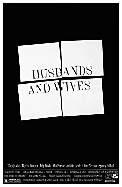
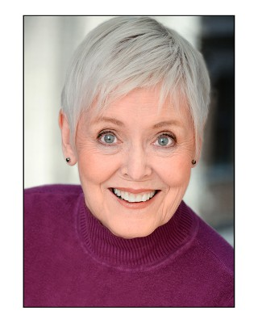

#8511 Ehemänner und Ehefrauen
Alternativ: Husbands and Wives
 
 IMDB-Wertung: 7.6 / 10
IMDB-Wertung: 7.6 / 10  Metascore: 0
Metascore: 0 
When Jack and Sally announce that they're splitting up, this comes as a shock to their best friends Gabe and Judy. Maybe mostly because they also are drifting apart and are now being made aware of it. So while Jack and Sally try to go on and meet new people, the marriage of Gabe and Judy gets more and more strained, and they begin to find themselves being attracted to other people.
Jahr: 1992
Dauer: 107 Minuten
FSK: 12
Land: USA Studio: A TriStar ReleaseTonspuren:
Untertitel: Englisch,
Auflösung: 720p (1280x688) Größe: 6860 MB
Genre: Drama, Komödie, Liebe
Regisseur:  Woody Allen
Woody Allen
Drehbuch: Woody Allen
Soundtrack:
Darsteller:
 Woody Allen als Gabe Roth
Woody Allen als Gabe Roth Mia Farrow als Judy Roth
Mia Farrow als Judy Roth Sydney Pollack als Jack
Sydney Pollack als Jack Judy Davis als Sally
Judy Davis als Sally- Jeffrey Kurland als Interviewer / Narrator
 Juliette Lewis als Rain
Juliette Lewis als Rain- Lysette Anthony als Sam
 Liam Neeson als Michael Gates
Liam Neeson als Michael Gates Ron Rifkin als Rain's Analyst
Ron Rifkin als Rain's Analyst Blythe Danner als Rain's Parents
Blythe Danner als Rain's Parents- Jerry Zaks als Dinner Party Guests
 Caroline Aaron als Dinner Party Guests
Caroline Aaron als Dinner Party Guests- Nora Ephron als Dinner Party Guests
 Kenneth Edelson als Gabe's Novel Montage
Kenneth Edelson als Gabe's Novel Montage David Boston als Party Guest (uncredited)
David Boston als Party Guest (uncredited)- Kent Kasper als Uncle Rifkin (uncredited)
-  Diane Kimbrell als Party Guest (uncredited)
 Fred Melamed als Mel (uncredited)
Fred Melamed als Mel (uncredited)- Nick Metropolis als TV Scientist
- Bruce Jay Friedman als Peter Styles
- Cristi Conaway als Shawn Grainger
- Timothy Jerome als Paul
- Rebecca Glenn als Gail
- Galaxy Craze als Harriet
- Benno Schmidt als Judy's Ex-Husband
- John Doumanian als Hamptons' Party Guests
- Gordon Rigsby als Hamptons' Party Guests
- Ilene Blackman als Receptionist
- Brian McConnachie als Rain's Parents
- Ron August als Rain's Ex-lovers
- John Bucher als Rain's Ex-lovers
- Matthew Flint als Rain's Boyfriend
- Jack Richardson als Dinner Party Guests
- Ira Wheeler als Dinner Party Guests
- Michelle Turley als Gabe's Novel Montage
- Victor Truro als Gabe's Novel Montage
- Kenny Vance als Gabe's Novel Montage
- Lisa Gustin als Gabe's Novel Montage
- Anthony Nocerino als Gabe's Novel Montage
- Philip Levy als Taxi Dispatcher
- Connie Picard als Banducci Family
- Steven Randazzo als Banducci Family
- Tony Turco als Banducci Family
- Adelaide Mestre als Banducci Family
- Jessica Frankston als Birthday Party Guests
- Merv Bloch als Birthday Party Guests
- Edward Burke als Gabe's Novel (uncredited)
Datei: X:\1992\Ehemänner und Ehefrauen (1992, FSK12, 1280x688).mkv seit 12.03.2018
Festplatte: HD 1992-1995
 Es gibt insgesamt 57 Filme in der Gruppe '1992'
Es gibt insgesamt 57 Filme in der Gruppe '1992'